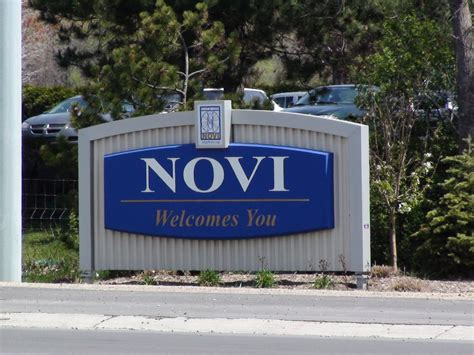

Blogging
The key to having a succesful day means developing a routine. People are habitual and are prone to develop habits. By instilling positive habits into a dialy routine, it becomes easier for you to continue those good practives and avoid negative habits. Also a routine helps you plan ahead and breakdown your day as you know in advance what you need to do. So start planning now to continue generating success.
Developing
Becoming a developer takes a lot of practice. I began in high school taking a course in Java. After getting a taste for it, I engendered a great interest in programming and took a lot of courses in college. The material covered a wide range of courses from web development to AI. Following my graduation, I would spend time doing Freelancing to bolster my portfolio. This leads me to today where I am enrolled at the Grand Circus to learn about c# and developing code in a professional manner.
Hometown
I was raised in the city of Novi,Michigan. Its name rumored to come from No. VI(Roman Numeral 6) due to Novi being the 6th Toll Gate. The city is home to Twelve Oaks Mall which has a load of stores to go to. Ease of travel due to the abundance of major freeways including M-5,I-275,I-696, and I-96 means menas your free to come anytime.
